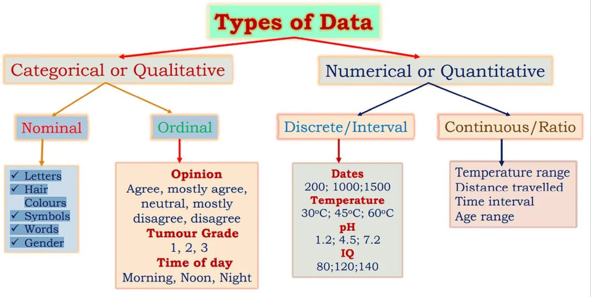
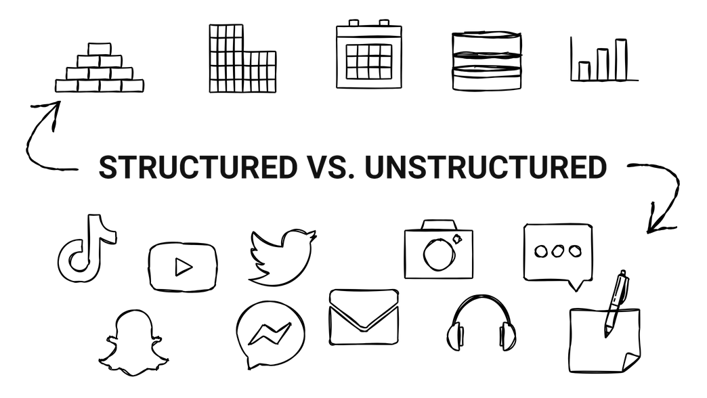
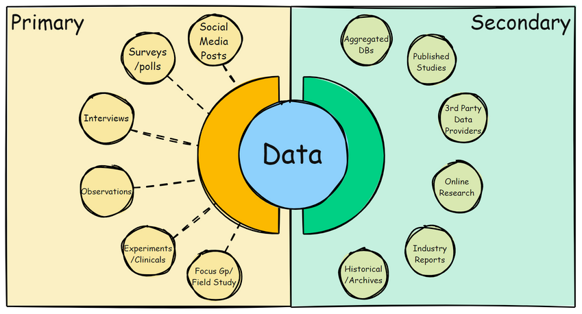
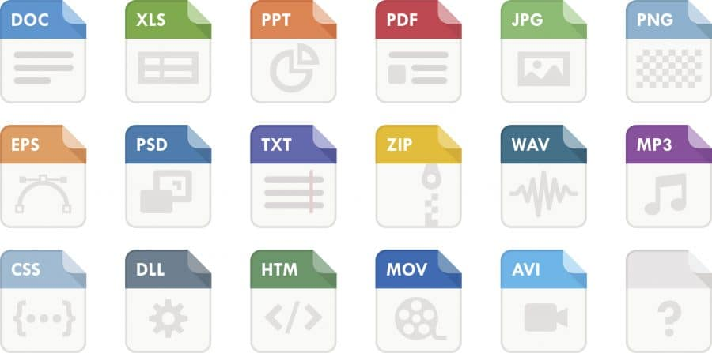
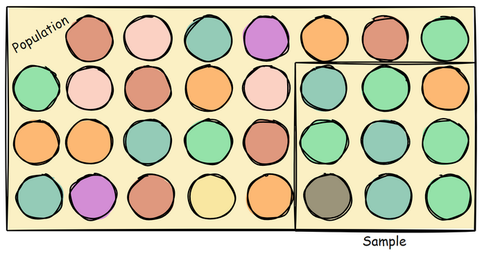

📚 Data Foundations in MDM Analysis
Overview
In this lesson, we will explore the foundational concepts of data as they relate to Misinformation, Disinformation, and Malinformation (MDM) analysis. Understanding the nature of data is critical when analyzing MDM, as different types of data—structured and unstructured, primary and secondary—each play a role in shaping our insights. We will also examine the sources of data commonly used in MDM research, as well as biases that can emerge during data collection. Lastly, we will discuss ethical considerations and responsible data use.
Learning Objectives
By the end of this lesson, you will be able to:
Identify different types of data (categorical, numerical, Boolean, structured, unstructured, primary, and secondary).
Recognize key data sources in MDM research, including social media, news, fact-checking databases, and surveys.
Understand common biases in data collection, such as selection bias, confirmation bias, and algorithmic bias, and strategies to mitigate them.
Discuss ethical considerations when working with data.
🔹 Introduction to Data
Data Types
Understanding Data Types in MDM Analysis
In MDM analysis, different types of data help us classify, measure, and interpret patterns of information spread. Broadly, data is categorized into qualitative (categorical) and quantitative (numerical) types, which influence how we store, analyze, and visualize information.
 Source: SDG Analytics in R, Flynn & Cruz
1. Qualitative (Categorical) vs. Quantitative (Numerical) Data
Data can be classified into two major types:
Qualitative (Categorical) Data
Qualitative data represents labels, groups, or classifications rather than measurable values. This type of data is often descriptive and is used in MDM research to categorize sources, sentiment, and misinformation topics.
Example in MDM Analysis:
"Fake","Misleading","Partially True","True"(Fact-checking categories)"Twitter","Facebook","YouTube"(Social media platforms)"Bot","Human","Troll"(User classification)
Types of Categorical Data
Nominal Data: Categories with no intrinsic order (e.g., misinformation topic:
"Health","Politics","Finance").Ordinal Data: Categories with a meaningful order but without precise numerical differences (e.g., misinformation severity:
"Low","Medium","High").
Quantitative (Numerical) Data
Quantitative data represents measurable quantities and is used for statistical and computational analysis in MDM research. It helps us track misinformation trends, engagement levels, and network influence.
Example in MDM Analysis:
Follower counts:
1200,5000,25000Engagement metrics:
3.5(average shares per post)Misinformation risk scores:
0.95(95% probability of being false)
Types of Numerical Data
Discrete Data: Whole numbers with distinct values (e.g., number of flagged posts per day:
5,10,15).Continuous Data: Values that can take any number within a range (e.g., engagement rate:
2.3%,4.7%).
2. Primitive Data Types
Primitive data types are the fundamental building blocks of all data storage and computation. These include:
a. Strings (Textual Data)
A sequence of characters used for representing textual information.
Example:
"Breaking: New health misinformation spreads on social media!"Common Uses: Social media posts, article titles, metadata
b. Integers (Whole Numbers)
Represent whole numbers with no decimal values.
Example:
2024(year),15(fact-checking reports)Common Uses: Counting posts, bot networks, engagement statistics
c. Floating-Point Numbers (Decimal Values)
Used for numerical data that requires precision, such as statistics and probabilities.
Example:
3.14,99.5,0.85(likelihood of a post being misinformation)Common Uses: Sentiment analysis scores, misinformation confidence levels
d. Boolean Values (True/False)
Used for binary decision-making in classification tasks.
Example:
True(fake news detected),False(not flagged)Common Uses: Fake vs. real news classification, bot detection
3. Complex Data Types
Beyond primitive types, complex data structures store multiple values and relationships.
a. Lists (Arrays, Vectors, Sequences)
Ordered collections of elements used for grouping related data.
Example:
["Fake", "Misleading", "Partially True", "True"]Common Uses: Fact-checking labels, user comment history
b. Tuples (Immutable Lists)
Similar to lists but cannot be modified after creation. Useful for storing fixed metadata.
Example:
("Tweet 3971", "Twitter", "Misinformation", "High Risk")Common Uses: Data integrity, metadata storage
c. Sets (Unordered, Unique Collections)
Used for storing distinct items with no duplicates.
Example:
{"Facebook", "Twitter", "TikTok"}Common Uses: Platforms where misinformation was detected
d. Dictionaries (Key-Value Mappings)
Data stored as key-value pairs, useful for fast lookups.
Example:
{"Snopes": 95%, "Politifact": 90%}Common Uses: Misinformation reliability scores, API responses
4. Specialized Data Types
a. Dates and Timestamps
Track when misinformation was posted and how long it persists.
Example:
2025-02-22 15:30:00(time of viral misinformation post)Common Uses: Trend analysis, misinformation lifespan studies
b. Text Data (Unstructured)
Large text datasets used in NLP tasks for misinformation detection.
Example:
"Breaking: Vaccine hoax trends on Twitter!"Common Uses: Sentiment analysis, keyword extraction
c. Binary Data (Images, Audio, Video)
Non-text data used in multimodal misinformation analysis.
Example:
.jpg(image memes),.mp4(deepfake videos)Common Uses: Image verification, AI-generated misinformation detection
Data Types and MDM Analysis
Selecting the appropriate data type impacts efficiency, accuracy, and computational performance in MDM analysis.
Data Type |
Use Case Example |
|---|---|
Categorical (Qualitative) |
Classification of misinformation sources, fact-checking labels |
Numerical (Quantitative) |
Measuring engagement, misinformation scores |
Strings |
Storing social media text, article content |
Booleans |
Fake news detection ( |
Lists |
Grouping related data (e.g., flagged news reports) |
Dictionaries |
Storing key-value pairs (e.g., source reliability scores) |
Timestamps |
Analyzing misinformation trends over time |
🧠 Quick Review Questions
Identify the Data Type
"False"– This value represents a __________ data type, commonly used in binary classification tasks.{"Twitter", "Facebook", "YouTube"}– This is an example of a __________, a collection of unique, unordered elements.("Breaking News", "Health Misinformation", "High Concern")– This is an example of a __________, which stores an ordered but immutable sequence of values.1024– This number is an example of an __________, a numerical type that does not include decimals.0.85– This value is an example of a __________, which represents a number with decimal precision."This post has been flagged as misinformation."– This is an example of a __________, a data type used for storing textual information.{"source": "Snopes", "accuracy": 95}– This is an example of a __________, a structure that maps keys to values for efficient lookup.[True, False, False, True]– This collection of values is an example of a __________, an ordered list of elements.2024-02-22 14:30:00– This value represents a __________, which is useful for tracking the timing of misinformation posts.["Fake", "Misleading", "Partially True", "True"]– This is an example of __________ data, which categorizes information into distinct groups.
Conceptual Questions
__________ data consists of labels or categories that do not have a meaningful numerical value (e.g., misinformation topics, fact-checking labels).
__________ data consists of numbers that can be measured and used in mathematical calculations (e.g., engagement metrics, misinformation probability scores).
A __________ data type is used when storing a collection of related but unchangeable values, such as metadata attributes for a news article.
A __________ is a collection of unordered elements that do not allow duplicates, commonly used for removing duplicate misinformation sources.
__________ data contains both text and multimedia elements and does not fit neatly into a structured format, requiring additional processing for analysis.
__________ data consists of tables, spreadsheets, or databases that have a predefined format and are easy to analyze.
The two types of categorical data are __________, which has no meaningful order, and __________, which follows a ranked sequence.
The two types of numerical data are __________, which consists of whole numbers, and __________, which includes decimals and fractional values.
A __________ is an efficient way to store and retrieve key-value pairs, such as misinformation source ratings or fact-checking results.
When choosing a data type, it is important to consider __________, which ensures that data is stored efficiently and processed accurately.
✅ Answers:
Boolean
Set
Tuple
Integer
Float
String
Dictionary
List
Timestamp (Datetime)
Categorical
Categorical (Qualitative)
Numerical (Quantitative)
Tuple
Set
Unstructured
Structured
Nominal, Ordinal
Discrete, Continuous
Dictionary
Efficiency and Accuracy

Structured vs. Unstructured Data
Structured Data → Well-organized, formatted, and machine-readable data, typically stored in relational databases.
Examples: Social media engagement metrics (likes, shares, comments), fact-checking datasets, bot detection logs.
Unstructured Data → Data that lacks a predefined format, requiring specialized techniques to extract meaning.
Examples: Social media posts, news articles, images, videos, and memes.
💡 Semi-Structured Data (e.g., JSON, XML) exists between these two categories. It has some structure but is not as rigidly organized as fully structured data.
Examples of Structured Data
✅ Social Media Engagement Metrics:
Data stored in relational tables tracking user interactions.
Includes post IDs, users, likes, shares, comments, timestamps.
✅ Fact-Checking Datasets:
Structured datasets mapping false claims to verdicts and sources.
✅ Bot Detection Data:
Logs tracking suspicious account activity, timestamps, and engagement frequency.
📌 Example Table: Social Media Engagement Metrics
Post ID |
User |
Likes |
Shares |
Comments |
Timestamp |
|---|---|---|---|---|---|
12345 |
seagate48 |
340 |
120 |
56 |
2024-11-01 14:30:00 |
15 |
swiftie99 |
12,703 |
1,609 |
471 |
2021-07-21 19:23:06 |
📌 Example Table: Fact-Checking Dataset
Claim ID |
Claim |
Verdict |
Source |
|---|---|---|---|
101 |
“Vaccines cause autism” |
False |
CDC Fact Check |
1139 |
“Politician caught on tape rigging votes” |
False |
Politico |
🔍 Advantages of Structured Data
Examples of Unstructured Data
✅ Social Media Posts & Comments
Raw text, including tweets, Facebook comments, Reddit discussions.
✅ News Articles & Blogs
Long-form misinformation narratives with no predefined structure.
✅ Multimedia Content (Images, Videos, Audio)
Viral videos, memes, and manipulated content spreading misinformation.
📌 Example: Unstructured Social Media Post
“COVID-19 is a hoax! Don’t trust the government. #FakeNews”
📌 Example: Unstructured News Article
⚠ Challenges of Unstructured Data
📌 How is Unstructured Data Processed?
Unlike structured data, unstructured data requires specialized techniques for analysis:
Natural Language Processing (NLP) → Extracts meaning from raw text (e.g., fake news detection).
Sentiment Analysis → Identifies emotional manipulation in misinformation content.
Image & Video Recognition → Detects manipulated images, deepfakes, and misleading visual content.
🔎 Structured vs. Unstructured Data: Key Comparisons
Feature |
Structured Data |
Unstructured Data |
|---|---|---|
Format |
Organized (tables, databases) |
Raw (text, images, videos) |
Storage |
SQL databases, spreadsheets |
NoSQL, cloud storage systems |
Ease of Analysis |
Easy to query and analyze |
Requires preprocessing |
Examples |
Retweet counts, engagement metrics |
Tweets, news articles, viral videos |
Analysis Tools |
SQL, Excel, Pandas |
NLP, AI, image recognition |
Applications |
Quantifying misinformation engagement |
Understanding sentiment & context |
🧠 Quick Review Questions
Which of the following best describes structured data?
Raw, unorganized data that requires extensive processing
Well-organized, machine-readable data stored in databases
Randomly collected social media posts and news articles
Visual misinformation like memes and deepfake videos
Unstructured data lacks a predefined format and requires ______ to analyze and extract meaning.
Which of the following is an example of structured data?
A dataset containing fact-checking verdicts mapped to claims
A series of unverified tweets about a breaking news event
A viral video spreading misinformation
A meme containing manipulated images and false statistics
Why is structured data easier to analyze than unstructured data?
It is pre-organized and formatted for machine processing
It always contains truthful information
It is primarily based on images rather than text
It requires advanced AI to interpret its meaning
Which of the following is a challenge of working with unstructured data?
It is stored in simple tabular formats, making it easy to query
It is consistently formatted and machine-readable
It requires specialized tools like Natural Language Processing (NLP) for analysis
It is always more reliable than structured data
A misinformation researcher wants to track false claims spreading through social media. What type of data will they likely analyze?
Only structured data, because unstructured data is not useful
Only unstructured data, since false claims are always in text format
Both structured (e.g., engagement metrics) and unstructured (e.g., social media posts) data
Neither structured nor unstructured data is relevant for misinformation research
✅ Answers:
Well-organized, machine-readable data stored in databases
advanced processing techniques
A dataset containing fact-checking verdicts mapped to claims
It is pre-organized and formatted for machine processing
It requires specialized tools like Natural Language Processing (NLP) for analysis
C) Both structured (e.g., engagement metrics) and unstructured (e.g., social media posts) data
Primary vs. Secondary Data Types

Conceptual Definitions
Primary Data
Primary data is information gathered firsthand for a specific research purpose. In the context of MDM, primary data includes:
Directly Collected Social Media Content: Tweets, posts, comments, or multimedia content harvested in real time.
Surveys & Interviews: Data obtained directly from users or experts regarding their experiences or opinions on misinformation.
Observational Data: Real-world observations, such as monitoring trending topics or emerging narratives during an event.
Advantages:
Relevance: Tailored to current events or specific research questions.
Control: Researchers have direct oversight of collection methods and data quality.
Challenges:
Resource Intensive: Requires significant time and effort to collect.
Potential Bias: Methods of collection might inadvertently introduce biases.
Secondary Data
Secondary data is information that was originally collected by others for different purposes and is reused for new analysis. Within MDM analysis, secondary data may come from:
Aggregated Databases: Repositories that compile misinformation examples, such as fact-checking archives.
Published Studies & Reports: Research articles, governmental or academic reports that offer broader perspectives on misinformation trends.
Third-Party Data Providers: Data sourced from media monitoring services or industry analyses.
Advantages:
Accessibility: Generally easier and faster to obtain than primary data.
Breadth: Offers a wide view by combining multiple data points across time and contexts.
Challenges:
Relevance: May not perfectly match the current research focus.
Quality Control: Researchers must critically assess the methods and potential biases of the original data collection.
Implicit Preprocessing & Filtering: The preprocessing and filtering of secondary data isn’t always explicitly documented, which can make it challenging to evaluate how the data was curated or altered before analysis.
Application in MDM Analysis
In misinformation detection, the choice between primary and secondary data shapes both the insights and the limitations of the analysis:
- Primary Data in MDM:Enables real-time monitoring of misinformation, offering highly specific insights into current trends. For instance, capturing live social media feeds during breaking news events can reveal immediate misinformation patterns, but may require rigorous filtering to manage noise and bias.
- Secondary Data in MDM:Serves as an important resource for validating and benchmarking findings obtained from primary data. Historical datasets, research reports, and aggregated statistics allow researchers to compare current trends with past data, helping to contextualize the evolution of misinformation over time.
File Types in MDM Analysis
 Source: File Types & Extensions, Filecenter
Conceptual Overview
File types are crucial for storing, exchanging, and analyzing data. Each format has its strengths and limitations, and the choice depends on factors like data structure, volume, and intended analysis. Below are some commonly used file types you’ll come across:
CSV (Comma-Separated Values)
Description: A text-based format that stores data in a tabular form, where each line represents a data record and fields are separated by commas.
Advantages:
Easy to read and write across many programming languages.
Widely supported and human-readable.
Disadvantages:
Limited to simple, flat data structures.
Does not support nested or hierarchical data.
JSON (JavaScript Object Notation)
Description: A lightweight, text-based data interchange format that supports nested and hierarchical data structures.
Advantages:
Highly flexible, making it suitable for complex data.
Easily parsed by a variety of programming languages.
Disadvantages:
Can be less efficient with very large datasets compared to binary formats.
Deeply nested structures may complicate data manipulation.
XML (eXtensible Markup Language)
Description: A markup language that encodes documents in a format that is both human-readable and machine-readable, using custom tags.
Advantages:
Provides strict data structure and validation through schemas.
Well-suited for representing complex documents.
Disadvantages:
Verbose syntax leads to larger file sizes.
Parsing can be resource-intensive compared to simpler formats.
Excel (XLS/XLSX)
Description: Proprietary spreadsheet file formats used commonly in business and research settings.
Advantages:
Supports multiple sheets, formulas, and charts.
User-friendly for data review and manipulation.
Disadvantages:
Requires specific software to open and edit.
Less ideal for automated processing of large datasets.
Binary Formats (e.g., Parquet)
Description: Columnar storage file formats designed for efficiency, such as Parquet, which are optimized for large-scale data analytics.
Advantages:
Fast read/write performance with big data.
Supports complex nested data structures.
Disadvantages:
Not human-readable without specialized tools.
Requires dedicated libraries for processing and manipulation.
Understand which ones you’re most comfortable with
CSV files are excellent for simple, tabular data and quick exploratory analysis.
JSON and XML excel in storing richer, hierarchical data retrieved from APIs or web scraping.
Excel files are beneficial for presenting data insights in a user-friendly format.
Binary formats like Parquet are optimal for handling large datasets efficiently during data processing and analytics.
🔹 Bias in Data Collection and Analysis
Why Bias Matters in MDM Research
Bias in data collection can significantly impact MDMresearch. If the data used to detect, analyze, or counter MDM is biased, the insights drawn from it may be misleading—or worse, they may reinforce existing MDM patterns.
In MDM detection, bias can lead to:
False positives → Mislabeling factual information as misinformation.
False negatives → Failing to detect actual misinformation.
Overrepresentation of certain narratives → Fact-checking efforts may focus on political misinformation while neglecting health-related misinformation.
Underrepresentation of misinformation sources → Social media platforms may remove misinformation from smaller news sources while allowing it to spread unchecked from influential accounts.
To ensure misinformation research remains accurate, fair, and effective, it is essential to recognize bias, understand its sources, and implement strategies to mitigate it.
🔎 Types of Bias in Data Collection
Bias in data can take many forms. The following are the most common types:
✅ Confirmation Bias
 Source: Confirmation Bias, The Decision Lab
Source: Confirmation Bias, The Decision Lab
Happens when researchers or data collection methods favor information that supports pre-existing beliefs or hypotheses.
📌 Example:
A study investigating misinformation about vaccines may unintentionally focus only on anti-vaccine content, ignoring misinformation from pro-vaccine sources (such as exaggerated vaccine efficacy claims).
A misinformation dataset collected using few search terms (e.g., “fake news about elections”) may filter out misinformation narratives that don’t match the researcher’s expectations but are still relevant—for example, narratives that use alternative terminology like “misinformation” or “disinformation,” or employ euphemisms and culturally specific expressions to discuss electoral issues without explicitly labeling them as “fake news.”
✅ Sampling Bias

Happens when the dataset is not diverse or inclusive, leading to skewed results.
📌 Example:
A misinformation study based only on Western media sources would miss regional misinformation narratives circulating in Africa, Asia, or Latin America.
A dataset focused only on major social media platforms (Twitter, Facebook, YouTube) may ignore misinformation spread on smaller platforms (Gab, Truth Social, Telegram).
✅ Reporting Bias
Occurs when certain types of misinformation are more likely to be fact-checked than others.
📌 Example:
Political misinformation often receives more scrutiny than health misinformation.
A misinformation study based on fact-checked articles may overemphasize topics fact-checkers focus on (e.g., elections, vaccines) while neglecting less-reported topics (e.g., climate misinformation, financial scams).
✅ Non-Response Bias
Bias that occurs when certain groups are less likely to respond to surveys or data collection efforts, leading to a non-representative dataset.
📌 Example:
A public health survey on vaccination rates has a low response rate from vaccine-hesitant individuals, leading to an overestimation of overall vaccination compliance.
Online customer satisfaction surveys often receive responses from people with strong opinions (very satisfied or very dissatisfied), while neutral customers are less likely to participate.
A political polling agency conducting phone surveys finds that younger individuals rarely answer calls, leading to an overrepresentation of older voters’ opinions.
✅ Measurement Bias
Bias introduced when the data collection tools or methods systematically influence responses, leading to inaccurate or misleading data.
📌 Example:
A blood pressure monitoring device consistently overestimates readings for individuals with darker skin tones due to improper calibration, leading to a misdiagnosis of hypertension.
A misinformation survey asks, “How often do you fall for fake news?”, making respondents less likely to admit their susceptibility due to embarrassment (social desirability bias).
✅ Recall Bias
Bias that occurs when participants struggle to accurately remember past events, leading to distorted or incomplete data.
📌 Example:
A dietary study asks participants to recall their eating habits over the past month, but individuals tend to underreport unhealthy foods and overreport healthy foods.
A study on misinformation exposure asks participants if they have seen false news in the past year, but many fail to accurately recall what they’ve read or shared online.
In a medical study on smoking-related diseases, former smokers underestimate their past smoking frequency, leading to underreported health risks in the analysis.
✅ Algorithmic Bias
Bias introduced by automated data collection tools, such as search engines, social media algorithms, or AI-based misinformation detection systems.
📌 Example:
Social media platforms prioritize high-engagement content, which often includes sensational misinformation rather than factual corrections.
AI-powered misinformation detection tools may disproportionately flag independent news sources while ignoring misleading content from mainstream media.
YouTube’s recommendation algorithm may unintentionally guide users toward conspiracy content based on previous watch history.
⚠ How Bias Affects Misinformation Detection
Bias in data collection can lead to:
Underrepresentation of misinformation sources → Certain demographics, platforms, or regions may be excluded from misinformation research.
Overestimation of certain types of misinformation → Fact-checking efforts may focus disproportionately on political misinformation while ignoring medical or scientific misinformation.
Flawed intervention strategies →
If AI models are trained primarily on English-language misinformation, they may struggle to detect misinformation in non-English languages.
If misinformation detection tools rely too heavily on engagement signals, they may mistakenly amplify certain narratives while downplaying others.
✅ Strategies to Mitigate Bias in Data Collection
To ensure high-quality, unbiased data, researchers and platforms can adopt several best practices applicable depending on the research question:
🔹 Diversify Data Sources
Collect data from multiple platforms, languages, and regions.
Example: The International Fact-Checking Network (IFCN) compiles misinformation reports from global sources to reduce geographic bias.
🔹 Use Transparent Sampling Methods
Clearly define how data is collected and ensure it represents all relevant groups.
Example: Studies should examine misinformation from both mainstream and alternative media sources to avoid ideological bias.
🔹 Audit Algorithmic Bias
Regularly evaluate AI-based misinformation detection models to prevent bias in automated content moderation.
Example: Facebook and Google have conducted bias audits on their misinformation detection AI to ensure it doesn’t disproportionately flag one group over another.
🔹 Balance Fact-Checking Coverage
Ensure that fact-checking covers a broad range of misinformation topics and sources, including political, health, financial, and climate misinformation.
🔹 Conduct Bias Assessments
Before analyzing data, assess whether the dataset has inherent biases that could impact results.
Example: Google improved its misinformation detection by incorporating data from diverse fact-checking organizations worldwide, reducing regional bias in its algorithms.
🧠 Quick Review Questions
Which of the following best describes selection bias?
The dataset favors high-engagement misinformation content.
The data collected is not representative of the full population being studied.
The researcher unintentionally focuses on data that supports their hypothesis.
The data is skewed by automated collection methods.
A misinformation detection algorithm prioritizes fact-checking political misinformation over health misinformation. This is an example of:
Sampling Bias
Algorithmic Bias
Selection Bias
Reporting Bias
What is one way to mitigate bias in data collection for misinformation research?
Relying on a single data source for consistency.
Using transparent sampling methods to ensure diverse representation.
Prioritizing only high-engagement misinformation for analysis.
Ignoring algorithmic bias, as it is unavoidable.
Which type of bias occurs when a misinformation study only focuses on content in English, ignoring misinformation in other languages?
Algorithmic Bias
Confirmation Bias
Sampling Bias
Selection Bias
An AI-powered misinformation detection tool flags more content from independent news sources than mainstream media. What type of bias might this indicate?
Selection Bias
Algorithmic Bias
Reporting Bias
Confirmation Bias
Confirmation bias occurs when researchers or data collection methods favor information that supports ______ beliefs or hypotheses.
One major risk of algorithmic bias in misinformation detection is that it amplifies high-engagement content, which often includes ______ misinformation.
To prevent selection bias, misinformation researchers should ensure that data is collected from ______.
✅ Answers
The data collected is not representative of the full population being studied
Reporting Bias
Using transparent sampling methods to ensure diverse representation
Sampling Bias
Algorithmic Bias
pre-existing
sensational
multiple diverse sources, platforms, and regions
🔹 Data Ethics and Responsible Use
 Source & Optional Reading: Data Ethics, UNSW
Source & Optional Reading: Data Ethics, UNSW
Why Ethics Matter in MDM Research The use of data in MDM detection raises important ethical considerations. While data analytics can help combat misinformation, improper data handling can violate privacy, reinforce biases, or suppress free expression. Ethical data collection and responsible use ensure fairness, transparency, and accountability in misinformation research.
Unethical data practices can lead to
Privacy violations → Collecting or exposing personally identifiable information (PII) without consent
Algorithmic discrimination → Misinformation detection models disproportionately flagging content from specific groups
Suppression of free expression → Overly aggressive content moderation mistakenly labeling valid opinions as misinformation
Key Ethical Considerations in Misinformation Research
✅ Privacy and Data Protection
Researchers must respect user privacy and ensure data is collected, stored, and analyzed responsibly.
Protection of Individual Rights: Every user has a fundamental right to privacy. Mishandling or inadequate protection of data can expose personal information, violating these rights and potentially causing long-term harm.
Risk of Data Misuse: Without proper anonymization and security measures, sensitive data may be exploited by malicious actors, leading to issues such as identity theft, harassment, or invasive surveillance.
Informed Consent and Transparency: Ethical research requires that users are aware of how their data is collected and used. When data is gathered without clear disclosure, it undermines trust and violates principles of informed consent.
Data Security Measures: Robust security practices, such as encryption and strict access controls, are essential to safeguard data. These measures help prevent unauthorized access and ensure that even if a breach occurs, the damage is minimized.
Balancing Research Goals with Privacy: While misinformation research is crucial, it must not compromise individual privacy. Responsible data handling ensures that the pursuit of knowledge does not come at the expense of personal security and dignity.
✅ Bias and Fairness
Algorithms and datasets must be designed to prevent discrimination and ensure fair detection of misinformation across different groups and sources. This is not just a technical issue; it has deep ethical implications:
Marginalization and Silencing: When AI-based misinformation detection disproportionately flags content from marginalized communities, it can silence voices that are already underrepresented. This not only restricts free expression but also exacerbates existing power imbalances, further marginalizing these groups.
Unequal Impact on Public Discourse: Models trained only on Western media sources risk ignoring or misclassifying misinformation circulating in non-English-speaking regions. This oversight can skew public discourse by failing to hold all sources to the same standards of accountability, potentially allowing harmful narratives to persist unchecked in diverse cultural contexts.
Trust and Legitimacy: When detection systems exhibit bias, they undermine public trust in technological solutions and media institutions. If people perceive that misinformation detection is unfair or discriminatory, it can lead to a broader erosion of trust in both the technology and the institutions relying on it, which in turn can fuel further polarization and mistrust.
Systemic Injustice: Bias in these systems reinforces systemic inequalities. By flagging certain groups’ content as misinformation more readily than others, the technology inadvertently validates harmful stereotypes and supports a cycle of discrimination. This raises significant ethical concerns about fairness, equity, and justice in the digital age.
✅ Transparency and Accountability
Organizations and researchers must be transparent about their data sources, methodologies, and goals to ensure public trust and research credibility.
Informed Oversight: Transparency allows stakeholders to understand how data is collected, processed, and interpreted. When methods and sources are clearly disclosed, it reduces the risk of hidden biases and arbitrary decisions that can undermine the integrity of the research.
Replication and Verification: Openly sharing methodologies and data sources enables other researchers to replicate studies and verify results. This reproducibility is essential for scientific progress and helps identify and correct potential errors or biases in the research process.
Clear Accountability: When criteria and methods are made public, organizations and researchers are held accountable for their decisions. This accountability ensures that any missteps or oversights can be scrutinized and addressed, fostering a culture of responsibility and continuous improvement.
Trust-Building with the Public: By disclosing how misinformation is identified and analyzed, organizations can build trust with the public. Clear communication about the methods used to label content or analyze data demonstrates a commitment to fairness and objectivity, reducing skepticism about potential hidden agendas.
✅ Free Speech vs. Misinformation Regulation
Balancing the fight against misinformation with protecting freedom of expression is a critical ethical challenge.
Preservation of Open Discourse: Regulatory measures must ensure that a diverse range of opinions can flourish. Overly restrictive policies may silence voices and hinder healthy public debate, which is essential for a functioning democracy.
Transparent and Consistent Criteria: Content moderation should be based on clearly defined, publicly disclosed standards. This transparency helps prevent arbitrary or politically motivated censorship and builds trust among users.
Preventing Overreach: While it is important to curb the spread of dangerous misinformation, measures must be calibrated to avoid encroaching on legitimate expression. Overzealous filtering or warning systems can inadvertently suppress critical discourse on controversial topics.
User Empowerment and Accountability: Platforms should provide mechanisms for users to challenge or appeal moderation decisions. This not only protects individual rights but also fosters a system of accountability, ensuring that regulation is applied fairly.
Best Practices for Responsible Data Use
Maintaining ethical standards in misinformation research is critical to public trust, fair outcomes, and minimizing unintended harms. Researchers and organizations must adopt best practices for data protection, transparency, and algorithmic fairness.
From Ethical Principles to Real-World Challenges
Throughout this lesson, we have explored how data ethics and bias influence MDM detection. While ethical guidelines and best practices help shape responsible research, real-world applications often present unforeseen challenges.
How do these ethical dilemmas manifest in practice? What happens when data collection methods introduce bias, or when AI-driven misinformation detection tools disproportionately impact certain groups?
To critically analyze these issues, let’s examine two case studies in GitHub Discussions (Assignment 2):
Case Study 1: The Impact of Data Collection Bias on Misinformation Research – How limitations in dataset selection can skew misinformation detection outcomes.
Case Study 2: Ethical Challenges in Misinformation Detection – How an AI-powered misinformation detection tool raised concerns about fairness and transparency.
These case studies will challenge us to think deeply about the ethical implications of misinformation detection and explore strategies for mitigating bias and ensuring responsible data use.
[ ]: